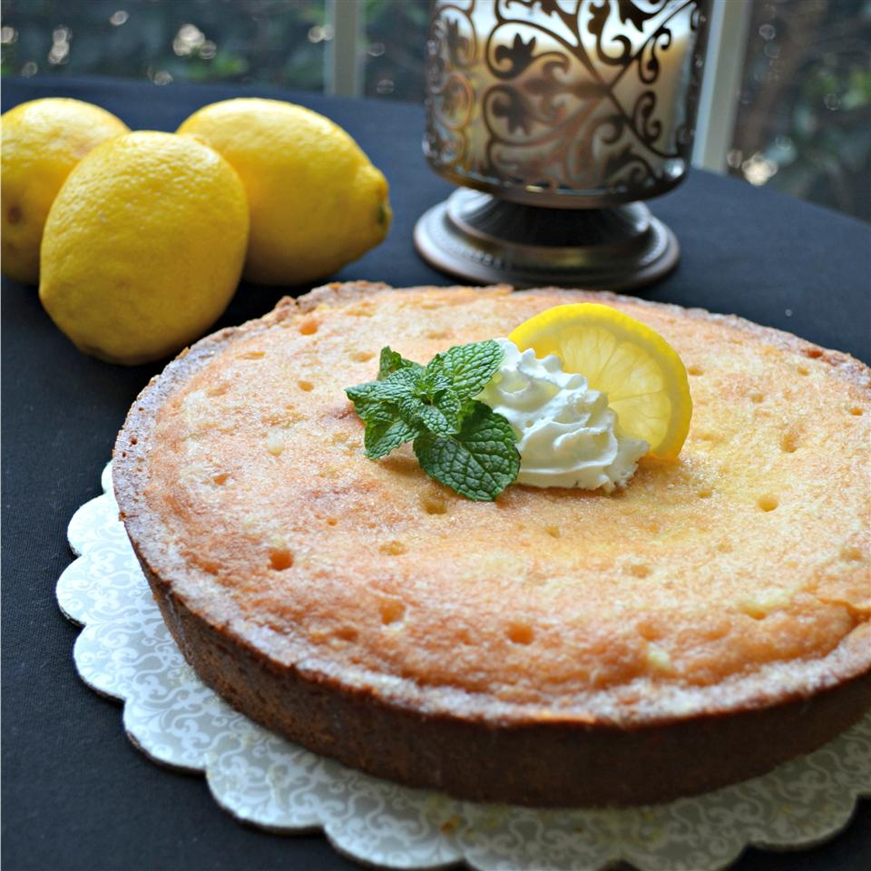

Heavenly Lemon Cake

Description
According to the recipe's author, this cake has "minimal and inexpensive ingredients, minimal preparation time,
is easy, and tastes divine... it has to be heaven!
Delicious moist lemon cake, perfect served hot with cream for dessert, or cold with coffee!
Ingredients
Cake
- 1 1/4 cups white sugar
- 1 cup butter, softened
- 3 eggs
- 2 cups all-purpose flour
- 3 lemons, zested
- 1 teaspoon baking powder
Syrup
- 1/2 cup white sugar
- 3 lemons, juiced
Steps
- Preheat oven to 350 degrees F (175 degrees C). Line a round cake pan with parchment paper.
- Beat 1 1/4 cup sugar and butter together in a bowl using an electric mixer until smooth; beat in eggs,
1 at a time, beating well before adding the next egg. Stir flour, lemon zest, and baking powder into creamed
butter mixture until batter is smooth; pour into the prepared pan.
- Bake in the preheated oven until a knife inserted in the center comes out clean, 45 to 55 minutes.
- Combine 1/2 cup sugar and lemon juice in a saucepan over medium heat; cook and stir until sugar is dissolved,
about 5 minutes.
- Poke holes into the top of the warm cake and pour syrup over cake. Cool slightly before cutting.